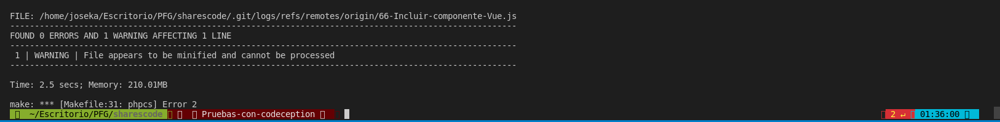
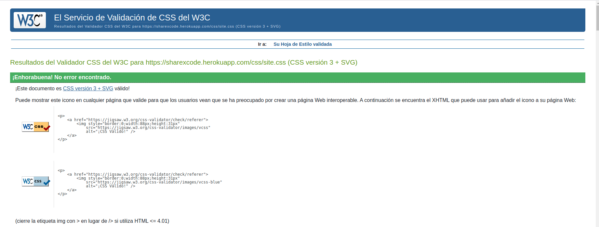
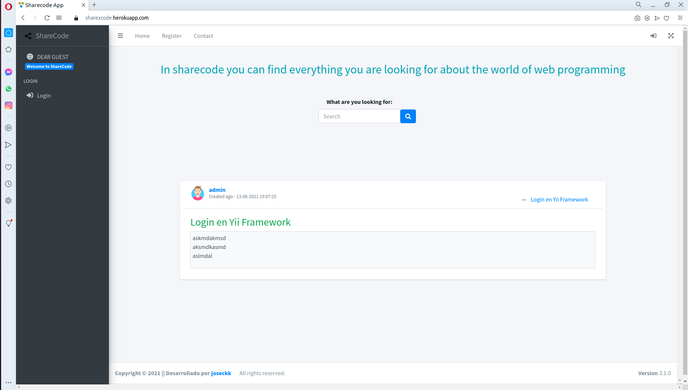
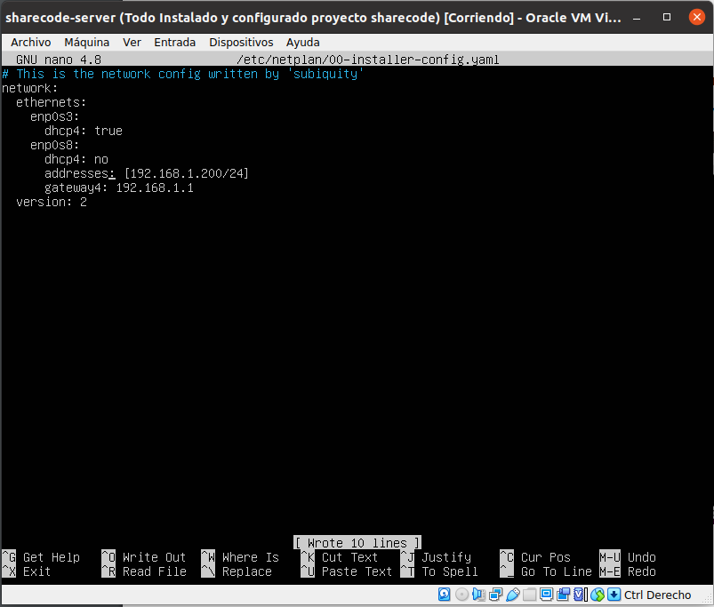
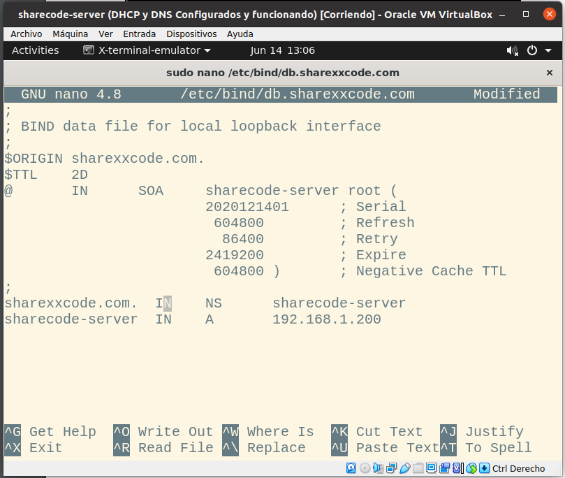
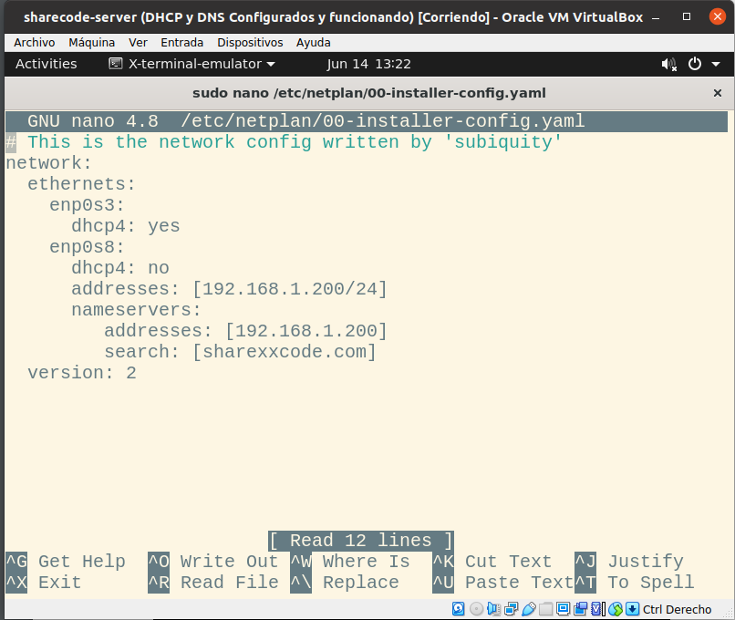
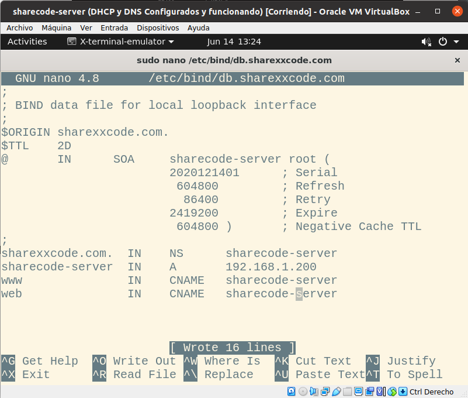
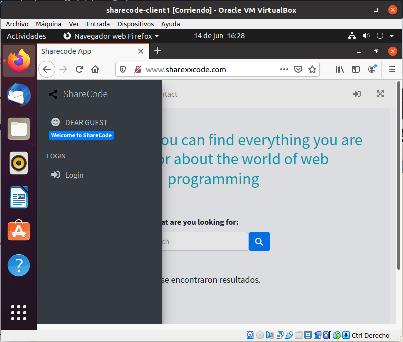

Anexos ¶
Prueba del seis ¶
¿Qué sitio es éste?
- La aplicación tiene en todo momento elementos indicativos de que sitio es. Arriba en la menú de navegación está en todo momento el logotipo de la aplicación. El menú de navegación y el pié de página se mantienen siempre, por lo que siempre está identificado el sitio.
¿En qué página estoy?
- Todas las páginas del sitio están identificadas por las migas de pan (excepto la inicial), lo que te sitúan en todo momento.
¿Cuales son las principales secciones del sitio?
- Las principales secciones del sitio son Home, My Portrait y Contact
¿Qué opciones tengo en este nivel?
- La navegación de cada nivel se realiza mediante botones y enlaces para hacer uso de las diferentes acciones y pantallas.
¿Dónde estoy en el esquema de las cosas?
- En todas las páginas se muestra tanto el navbar como el sidebar que muestran todas las diferentes opciones de la web.
¿Cómo busco algo?
- En el inicio de mi sitio web aparece un buscador con el cual puedo localizar cualquier consulta creada.
(R25) Codeception ¶

(R26) Codeclimate ¶

(R33) Uso de microdatos ¶

(R34) Validación HTML5, CSS3 y accesibilidad ¶
Validación de HTML y CSS ¶
HTML

CSS

Accesibilidad

(R36) Varios navegadores ¶
Google Chrome ¶

Mozilla Firefox ¶

Opera ¶

(R38) Despliegue en servidor local ¶
Configuración del servicio DHCP en el server:

Configuración del servicio DHCP en el cliente:

Configuración del servicio DNS en el server:
- Creando las zonas en named.conf.local.

- Creando el fichero de configuración de la zona directa.

- Creando el fichero de configuración de la zona inversa.

Configuración del servicio Apache en el server:
- Nueva configuración del netplan.

- Cambios en la configuración de la zona directa.

- Cambios en la configuración de la zona inversa.

- Ahora configuraremos el fichero de sites-available para poner la ruta del proyecto y configurar directivas.

- Por último comprobaremos que al fin está desplegada nuestra aplicación desde la maquina cliente.
